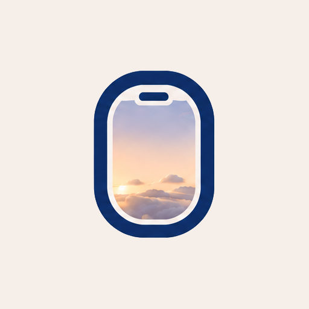

4번(로고 컬러 창문)으로 확정하고, 말씀대로 창문을 크게 키워 창 안이 잘 보이게 했습니다. 회색 타일을 없애고 창문 자체가 아이콘이 됩니다.
제가 만든 건 SVG 벡터라 해상도가 없습니다. 아무리 키워도 선명하고, 파일 화질과 무관해요. 뭉개진 건 표시 크기가 작아서입니다. 아래는 512px 고화질 원본 파비콘을 크기만 줄여 놓은 것입니다 — 고화질이어도 16px로 그리면 똑같이 뭉개집니다. 16px 안에 테두리(1.6px)·하늘·환기구 슬롯(0.9px)·내용물을 다 넣으면 각 요소가 1픽셀 미만이 되기 때문이에요.

16px뭉개짐※ 벡터가 같은 52px에서도 더 또렷한 이유: 원본 PNG는 정사각형 안에 여백까지 담고 있어 창문이 실제로는 더 작게 그려집니다. 벡터는 창문만 꽉 채웁니다.
로고 하늘은 가운데가 밝은 노을이라, 크림색 내용물은 배경에 묻힙니다(지난 시안의 약점). 네 가지를 같은 크기로 비교했어요.
밝은 노을 위 크림 — 대비가 약해 형태가 흐릿합니다.
테두리와 같은 남색. 대비는 확실하지만 다소 무겁고 테두리와 붙어 보입니다.
흰 형태에 옅은 남색 그림자. 노을을 살리면서 형태가 뜹니다.
창 위아래를 살짝 눌러 흰 형태가 또렷이. 창밖을 내다보는 느낌도 살아요.
회색 타일을 없애고 창문을 52px로 키웠습니다. 지난 시안은 46px 타일 안 26px 아이콘이라 창문이 실제로 23px밖에 안 됐어요 — 두 배 이상 커집니다.
국내 10개 항공사 소식을 한곳에서. 스크랩하면 항공사별로 쌓여요.
매일 한 질문씩, 내 경험에서 답변 소재를 캐요.
발굴한 소재가 나만의 면접 답변으로 쌓여요.
진짜 면접처럼 묻고, 끝나면 종합 첨삭을 받아요.
같은 아이콘을 예전 크기로 놓으면 이렇습니다. 창 안 형태가 얼마나 차이 나는지 보세요.
지난 시안 크기 — 반짝임이 작아 뭉개집니다.
글줄이 뭉쳐 보입니다.